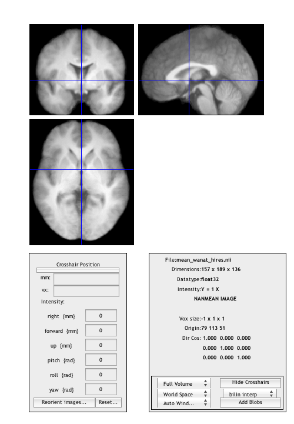

More FILES usage, and BSPM_IMCALC to manipulate fMRI data
Contents
Use FILES to select all 10 wanat_hires.nii files
allanat = files('sub*/**/wanat_hires.nii', 1)
allanat =
/Users/bobspunt/Desktop/Personal/SPM_Labs_Data/sub01/anatomy/precooked/wanat_hires.nii
/Users/bobspunt/Desktop/Personal/SPM_Labs_Data/sub02/anatomy/precooked/wanat_hires.nii
/Users/bobspunt/Desktop/Personal/SPM_Labs_Data/sub03/anatomy/precooked/wanat_hires.nii
/Users/bobspunt/Desktop/Personal/SPM_Labs_Data/sub04/anatomy/precooked/wanat_hires.nii
/Users/bobspunt/Desktop/Personal/SPM_Labs_Data/sub05/anatomy/precooked/wanat_hires.nii
/Users/bobspunt/Desktop/Personal/SPM_Labs_Data/sub06/anatomy/precooked/wanat_hires.nii
/Users/bobspunt/Desktop/Personal/SPM_Labs_Data/sub07/anatomy/precooked/wanat_hires.nii
/Users/bobspunt/Desktop/Personal/SPM_Labs_Data/sub08/anatomy/precooked/wanat_hires.nii
/Users/bobspunt/Desktop/Personal/SPM_Labs_Data/sub09/anatomy/precooked/wanat_hires.nii
/Users/bobspunt/Desktop/Personal/SPM_Labs_Data/sub10/anatomy/precooked/wanat_hires.nii
Use the HELP function to see documentation for using "bspm_imcalc"
help bspm_imcalc
BSPM_IMCALC Calculate Output Image based on Input Image(s)
USAGE: bspm_imcalc(in, outname, operation)
in = array of images to smooth (full path)
outname = name for output image
operation = string specifying operation to apply
LOGICAL OPERATORS
>, <, >=, <=, ==
NON-LOGICAL OPERATORS (ACROSS IMAGES)
'sum' - sum across images
'prod' - produce across images
'mean' - mean across images
'median' - median across images
'std' - std across images
'var' - var across images
'min' - min across images
'max' - max across images
'diff' - contrast across images (2 only)
NON-LOGICAL OPERATORS (SINGLE IMAGE)
'negative' - negative of image
'nan2zero' - convert NaNs to 0s
'zero2nan' - convert 0s to NaNs
'zscore' - convert t-image to z-image
'prctile' - convert to percentile
'prctilesym' - convert to percentile for pos/neg separately
'fill' - uses IMFILL to fill in holes in volume
SPECIAL OPERATORS
'colorcode' - combine and colorcode multiple images
Use BSPM_IMCALC to compute the mean anatomical
bspm_imcalc(allanat, 'mean_wanat_hires.nii', 'mean');
Use BSPM_DISPLAY to examine the mean anatomical
bspm_display('mean_wanat_hires.nii');

Use FILES to select all 10 con_0001.img files for the 2x2 model
conimg = files('sub*/**/precooked/2x2/con*01.img', 1)
conimg =
/Users/bobspunt/Desktop/Personal/SPM_Labs_Data/sub01/results/precooked/2x2/con_0001.img
/Users/bobspunt/Desktop/Personal/SPM_Labs_Data/sub02/results/precooked/2x2/con_0001.img
/Users/bobspunt/Desktop/Personal/SPM_Labs_Data/sub03/results/precooked/2x2/con_0001.img
/Users/bobspunt/Desktop/Personal/SPM_Labs_Data/sub04/results/precooked/2x2/con_0001.img
/Users/bobspunt/Desktop/Personal/SPM_Labs_Data/sub05/results/precooked/2x2/con_0001.img
/Users/bobspunt/Desktop/Personal/SPM_Labs_Data/sub06/results/precooked/2x2/con_0001.img
/Users/bobspunt/Desktop/Personal/SPM_Labs_Data/sub07/results/precooked/2x2/con_0001.img
/Users/bobspunt/Desktop/Personal/SPM_Labs_Data/sub08/results/precooked/2x2/con_0001.img
/Users/bobspunt/Desktop/Personal/SPM_Labs_Data/sub09/results/precooked/2x2/con_0001.img
/Users/bobspunt/Desktop/Personal/SPM_Labs_Data/sub10/results/precooked/2x2/con_0001.img